キャストと、お店と、お客様をリンクする。
コンカフェ専用の予約・店舗管理システム予約台帳・レジ・シフト表・給与・勤怠・経費を、ひとつに。
必要な機能だけ選んで月¥12,800から。全機能30日間無料・無料期間が終わっても自動で課金されません。
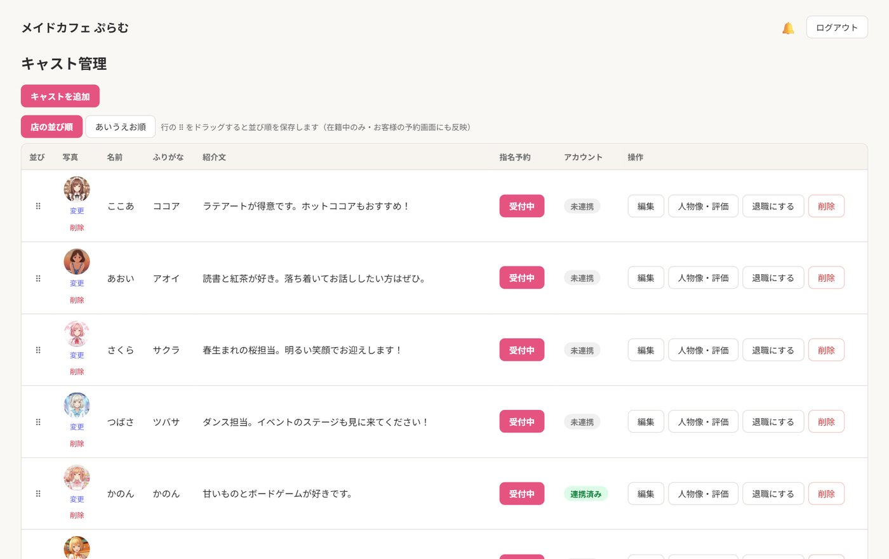
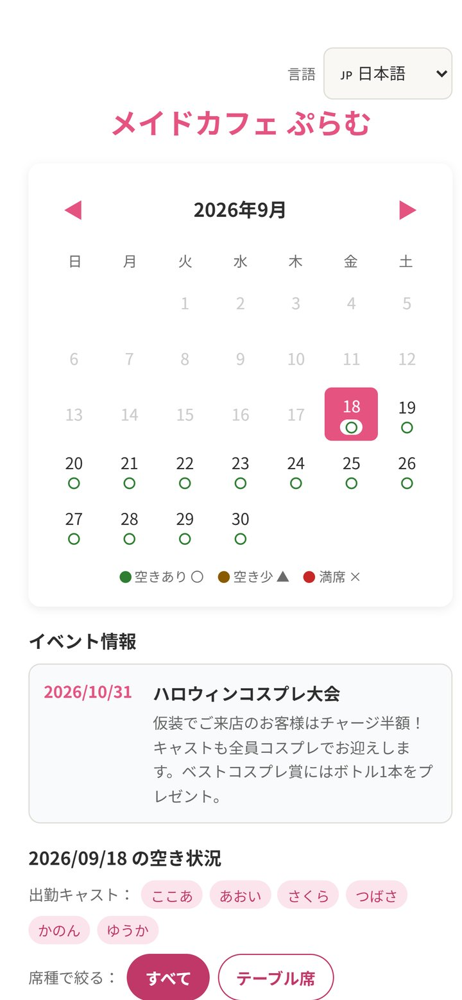
キャバクラ向けのPOSでは、この悩みは解けませんでした。
コンカフェの営業は、キャバクラとは違うから。
きゃすりんは8つの機能モジュールから、必要なものだけ選べます。
組み合わせるほど割引、パックならさらにお得。8つ全部でも月¥39,800。
料金は下の価格表がすべてです。「問い合わせないと料金が分からない」はやめました。
※画面はすべて開発中の実際の画面です。店舗名・お客様名・キャスト・金額はデモ用の架空データです。画像を押すと拡大します。
お店専用の予約ページを発行できるので、営業中も閉店後も、お客様がスマホから自分で予約できます。入った予約はそのまま台帳へ。
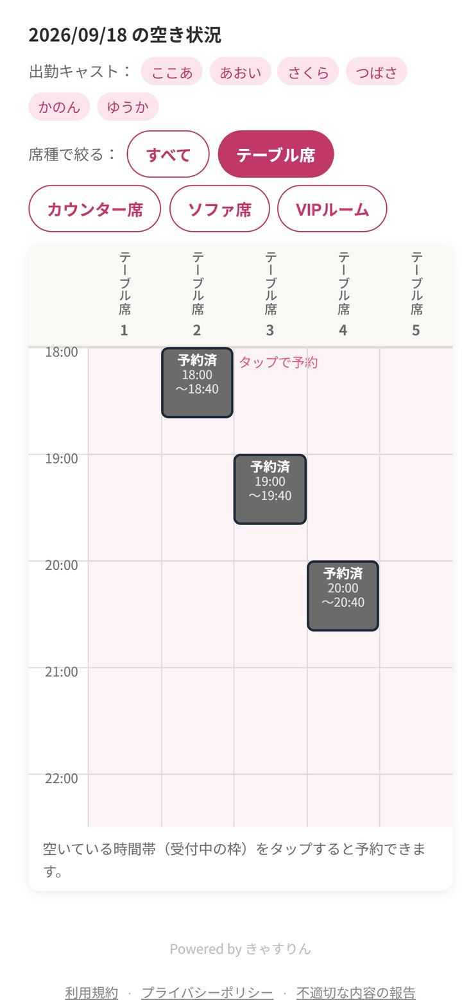
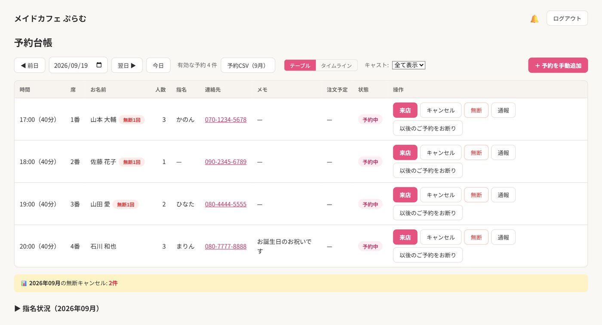
席料・セット・キャストドリンクをタップで伝票へ。会計した内容は日報に自動で集計されるので、閉店後に電卓で売上を足し直す必要がありません。
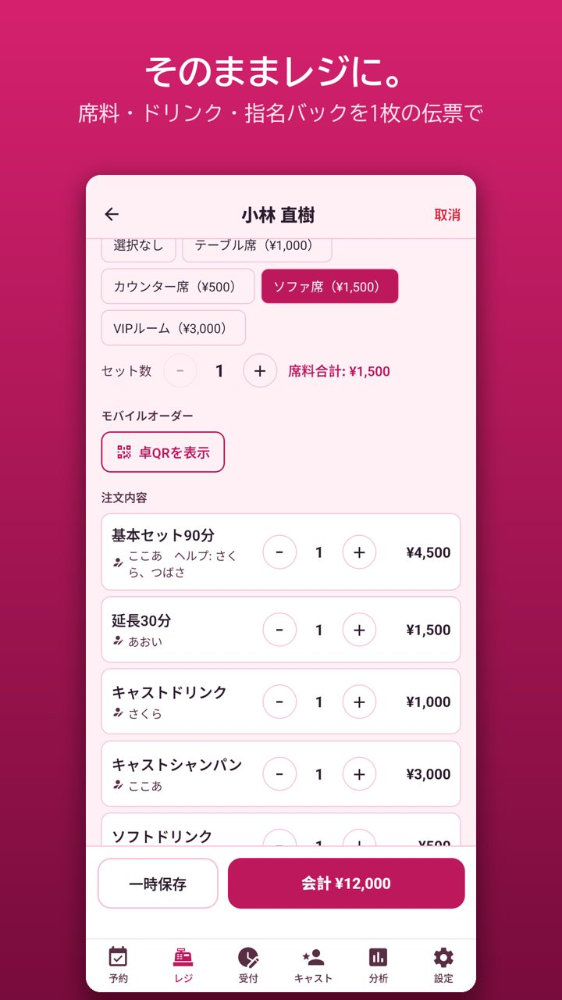
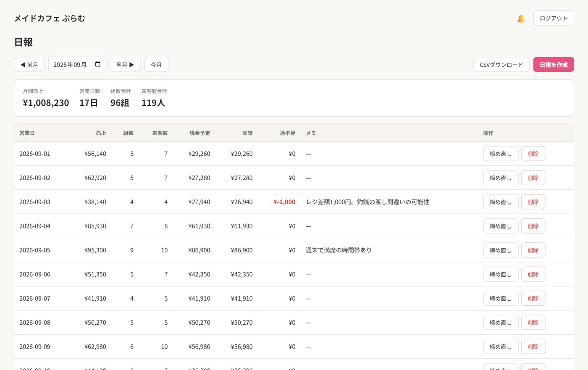
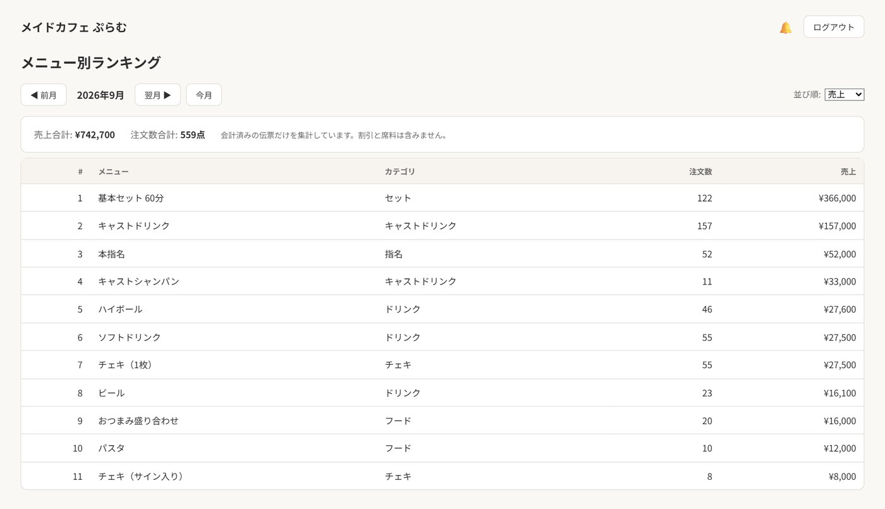
キャストが自分のアプリからシフト希望を提出し、オーナーは承認するだけ。確定したシフトは、テンプレートを選ぶだけでSNS用の画像になります。
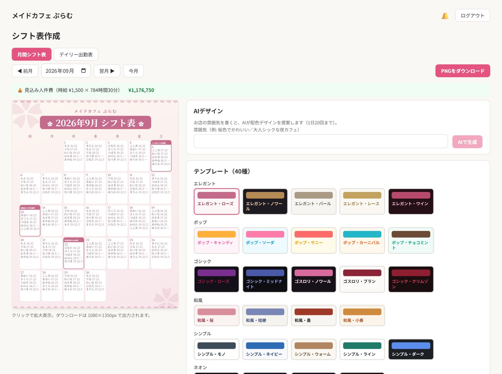
時給・指名バック・ドリンクバック・指名数ボーナス。営業の記録から自動で積み上がるので、締め日にまとめて計算し直す必要がありません。
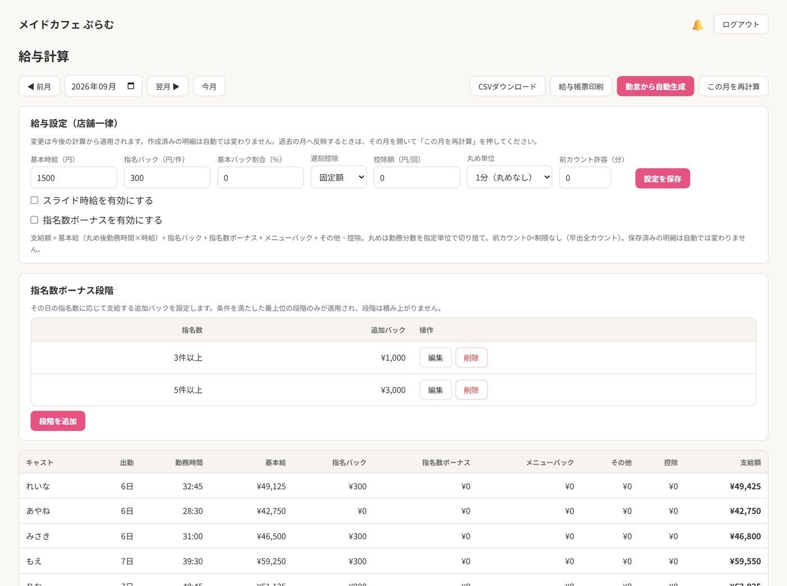
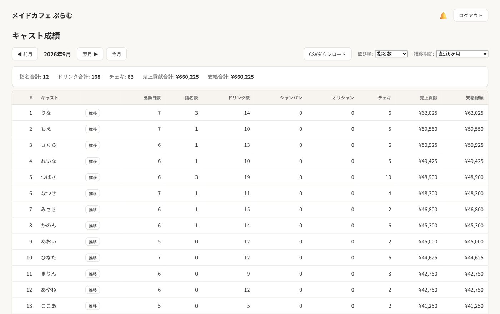
期間の売上・営業日数・日別平均を自動で集計。月ごとの推移や曜日ごとの傾向、キャスト別の指名ランキングで、お店の判断を数字でできるようになります。
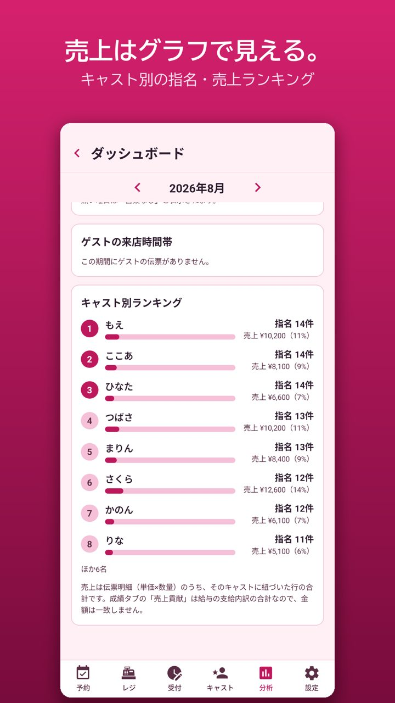
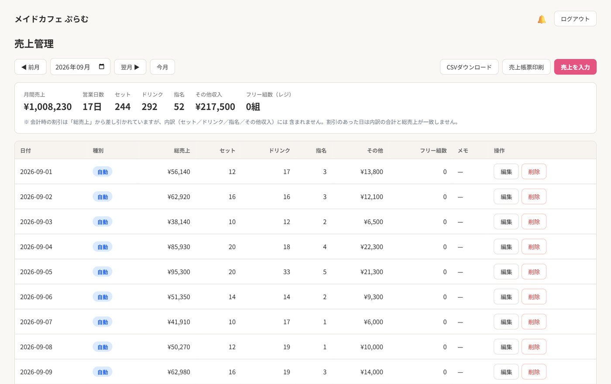
来店回数・ポイント・スタンプをお客様ごとに記録。回数券やクーポン券の発行・使用も管理できるので、「また来る理由」を作れます。
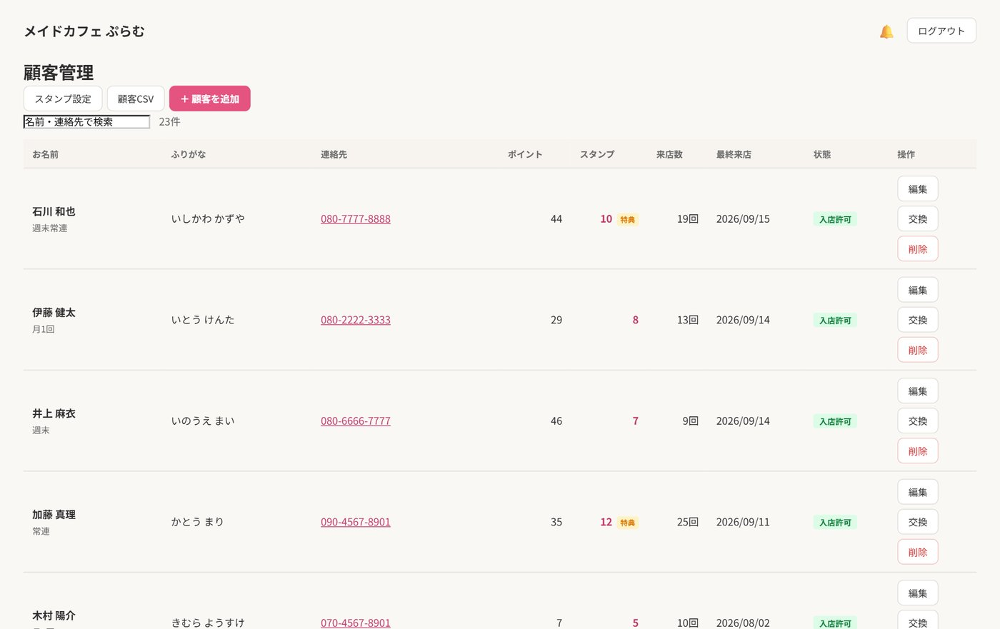
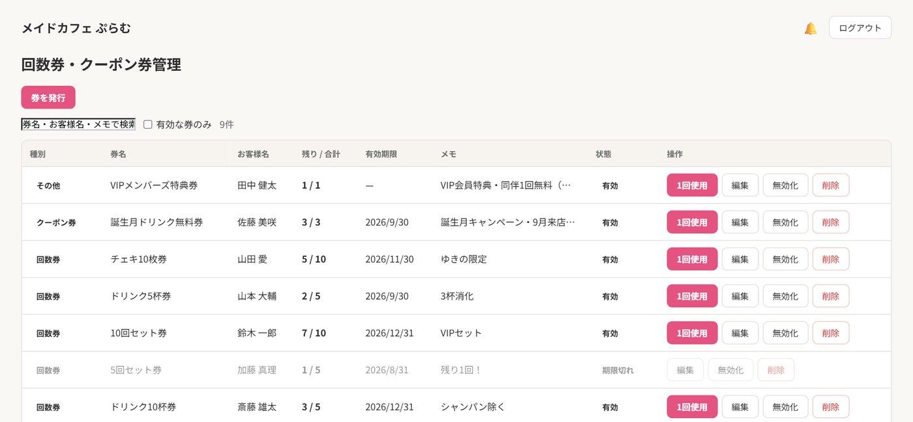
出退勤はキャスト本人がスマホで打刻。遅刻・欠勤・早退も記録され、月ごとに集計されます。
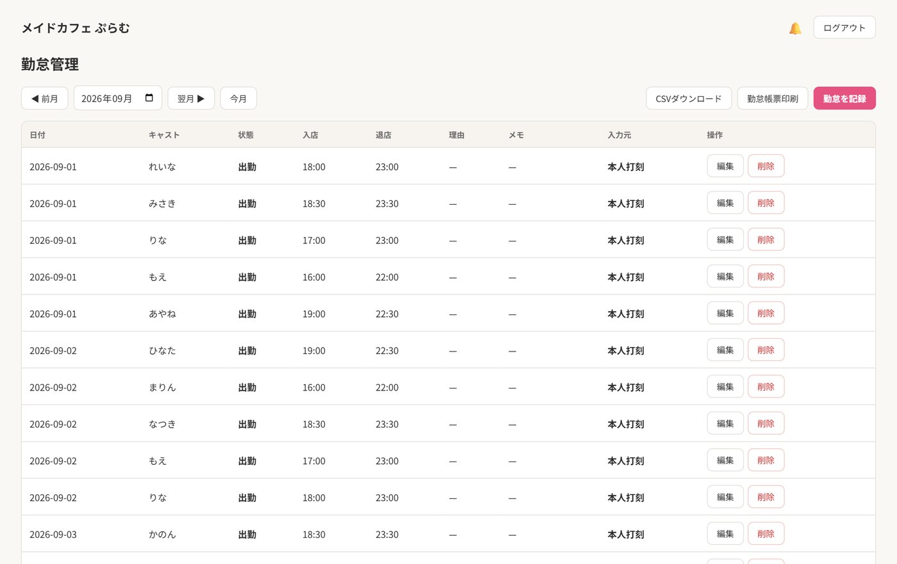
撮影したレシートをAI-OCRが読み取り、経費として記帳します。家賃などの固定経費は毎月自動で計上。
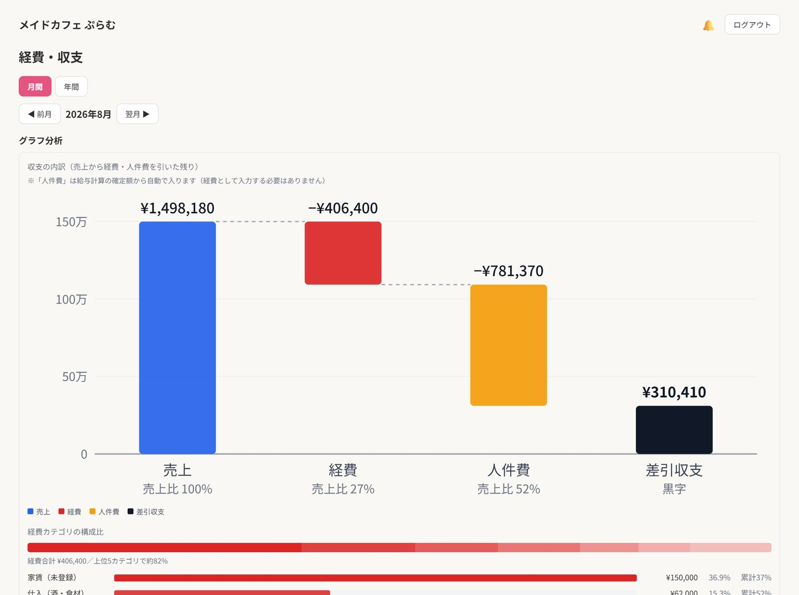
お客様用の予約ページは5言語に対応。言語を切り替えると、カレンダーやボタンの表示が切り替わります。
※お店が入力したイベント名・紹介文などは、入力した言語のまま表示されます。
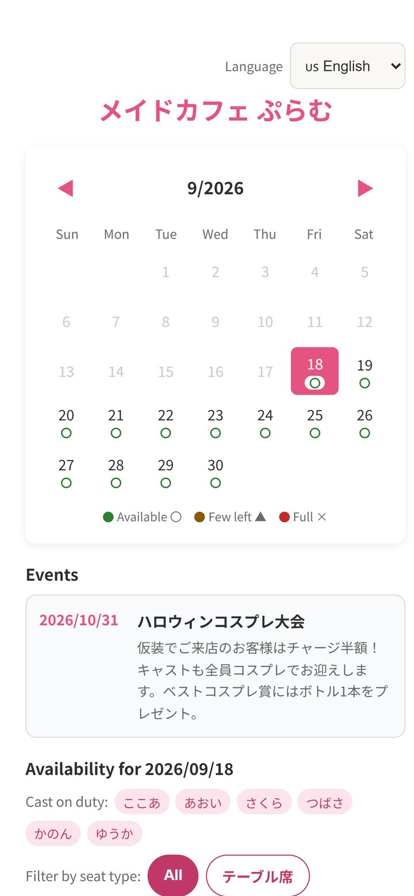
予約・レジ・給与・集客——どれか1つに強いサービスはあります。
ただ、コンカフェ向けに予約から会計・給与・分析までを1つで扱うものは、当社が調べた範囲では見当たりませんでした（2026年7月 当社調べ）。
| きゃすりん | A社 大手POS | B社 水商売POS | C社 格安POS | D社 集客アプリ | |
|---|---|---|---|---|---|
| 主な対象 | コンカフェ専用 | ナイトワーク全般 | 水商売全般 | 水商売全般 | コンカフェ （集客のみ） |
| お客様のWeb予約・予約台帳 | ● | − | − | − | − |
| レジ・会計（POS） | ● | ● | ● | ● | − |
| シフト表→SNS告知画像 | ● | − | − | − | ▲出勤表のみ |
| 給与・バック計算 | ● | ● | ● | ● | − |
| お客様ポイント・スタンプ | ● | ▲顧客管理 | ▲顧客管理 | ▲顧客管理 | ● |
| 経費・レシートOCR | ● | − | − | − | − |
| 必要な機能だけ選んで支払う | ● 8モジュール | − | − | ▲3プラン | ▲2プラン |
| 料金をWebで全公開 | ● | 要問い合わせ | ● | ● | ● |
| 月額の目安（税別） | ¥12,800〜 ¥39,800 | 非公開 | 約¥30,000 （税込表示） | ¥9,800〜 ¥29,800 | ¥0〜 ¥4,800 |
| 初期費用 | ¥0 | 公表なし | ¥0 | 公表なし | ¥0 |
※2026年7月時点の各社公開情報をもとにした当社調べです。特定を避けるため他社名は伏せています。▲＝近い機能あり／−＝公開情報では確認できず。料金・機能の最新かつ正確な内容は、各サービスに直接ご確認ください。
安さで選ぶならC社、集客だけならD社もいい選択です。
「コンカフェの営業をまるごと1つで」なら、きゃすりんです。
| モジュール | できること | 月額 |
|---|---|---|
| base（基盤） | 予約台帳・受付・キャスト管理・お客様Web・通知・Q&A AI | ¥12,800 |
| register | オーダー・伝票・会計・席料・日報・印刷・在庫・メニュー別ランキング | ¥9,800 |
| shift | シフト表テンプレ40種・AIデザイン月100回・SNS投稿 | ¥8,800 |
| sales | 売上・給与・バック・スライド時給 | ¥8,800 |
| analytics | 期間集計・ランキング・グラフ・ダッシュボード | ¥7,800 |
| customer | お客様モード・ポイント・景品・スタンプ | ¥7,800 |
| attendance | 打刻・欠勤遅刻早退・月次集計 | ¥5,800 |
| expense | 経費・定期固定経費・レシートOCR月100枚 | ¥5,800 |
下のパックなら、自由に選ぶよりさらにお得です。
追加パック：AI生成50回 ¥1,980 ／ レシートOCR 300枚 ¥980（月内使い切り）
※Web（クレジットカード）でのお申し込みは税別表示で、決済時に消費税を加算します。アプリ内課金は各ストアに表示される税込価格です。
※有料プランは月額の自動更新です。
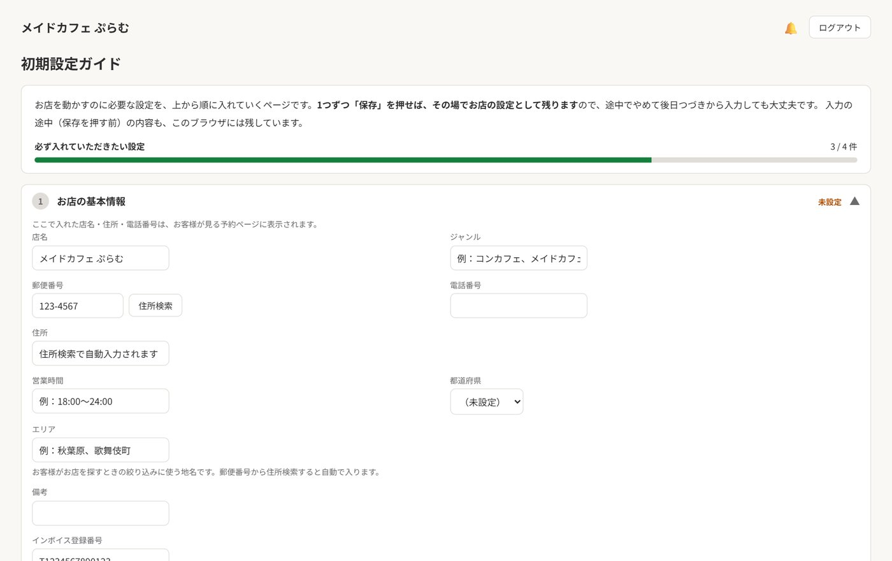
お店の管理は、パソコンの管理Webとスマホ・タブレットのアプリのどちらからでも行えます。表や集計を広い画面で見るなら管理Web、営業中の予約確認や伝票入力はアプリが便利です。お客様はアプリ不要で、Webの予約ページから予約できます。
予約・受付・レジ・キャスト・分析・設定はアプリから操作できます。対応環境：iPhone・Androidアプリ＋パソコン・タブレットのブラウザ（管理Web）。
一括取り込みの機能は現在は非対応です。並行運用からの段階的な移行をおすすめしています。
現在は1アカウントにつき1店舗です。複数の店舗を運営している場合は、店舗ごとにアカウントをお作りください。
売上・給与・勤怠・経費などの帳票は、解約前にCSVで出力できます（顧客台帳・予約データはパソコンの管理Webから）。退会後のデータの保持期間はプライバシーポリシーに記載します。
インターネットを経由する通信はTLS/SSLで暗号化しています。店舗の業務データは店舗ごとに分離され、予約者の氏名・ご連絡先は当該店舗とご本人だけがご覧になれます。ただし公開予約ページに掲載するキャスト写真・シフト表の背景画像など、掲載を目的とするものは公開の場に置かれます。取扱いの全体はプライバシーポリシーをご覧ください。
計算の内訳（時給・バック・控除）をすべて画面で確認・出力できます。最終的な税務判断は税理士等にご相談ください。
試して合わなければ、購入しなければ費用はかかりません。
30日間無料ではじめるきゃすりんは、キャバクラ向けシステムの機能を削って作った「簡易版」ではありません。予約台帳も、シフト表も、給与計算も、最初からコンカフェの営業だけを考えて設計しました。
推し来店、スタンプカード、SNSの出勤告知——コンカフェの「当たり前」は、既存の水商売向けシステムには入っていませんでした。無いなら、専用のものを作ろう。それが、きゃすりんの出発点です。
キャストとお客様に向き合う時間が、閉店後の事務作業に奪われませんように。その一心で作っています。
きゃすりん開発者 瑠璃フクロウ